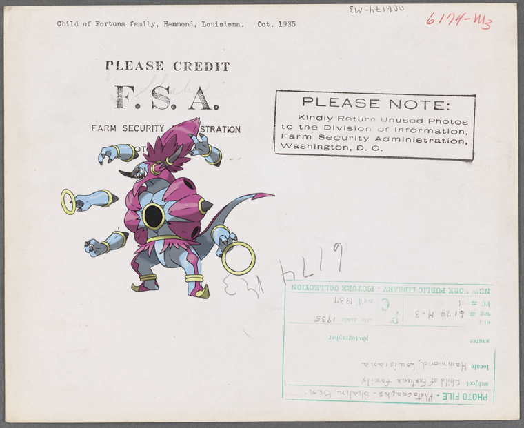

-
Porygon – Cogida de un moro estando en la plaza.
-
Spewpa, Absol @ Area District Map Section No. 7.
-
![Kecleon @ Letter to [William Lee, London.]! http://digitalcollections.nypl.org/items/571e8140-c534-012f-950d-58d385a7bc34](media/finding-WBOGOvYu.png) Kecleon on Letter to [William Lee, London.]
Kecleon on Letter to [William Lee, London.] -
 Swellow, Garbodor | The traditional Mount of Precipitation, Nazareth..
Swellow, Garbodor | The traditional Mount of Precipitation, Nazareth.. -

-
Geodude + Send back the picture and the ring
-
Sneasel on Samango Brugnoli Amalia..
-
Honedge, Kingler + [M-M]!
-
Pachirisu ; John Dickinson.!
-

- 
-
Terrakion + Brig. Gen. Daniel Morgan.
-
Togekiss on A6-Corsican Boys
-

-
Seismitoad, Crustle – DINNER [held by] NORDDEUTSCHER LLOYD BREMEN [at] SS FRIEDRICH DER GROSSE (SS;)
-
 Camerupt @ Peinture dans les tombeaux des Rois à Thèbes..
Camerupt @ Peinture dans les tombeaux des Rois à Thèbes.. -
 Dragalge, Rufflet + Daniel Ludlow
Dragalge, Rufflet + Daniel Ludlow -
Meowstic-Male – Specimen of Honiton lace by Mrs. Treadwin of Exeter.!